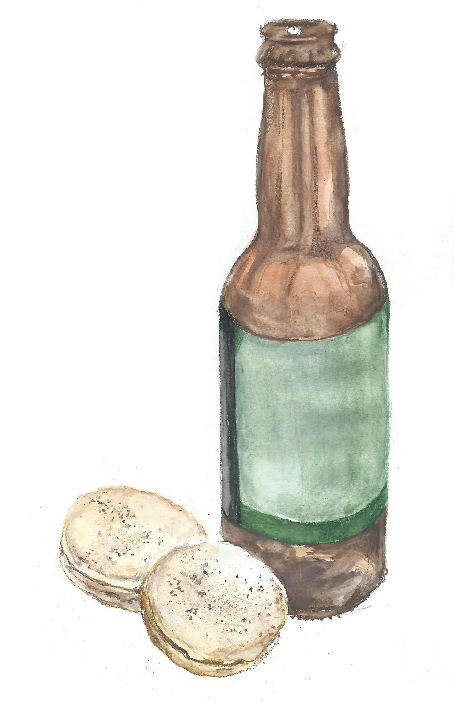

Ale (the viking way!)

Description
A rustic ale brewed from malted barley and honey, lightly fermented to produce a slightly sweet and earthy drink.
Ingredients
- 1 gallon (3.8 liters) water
- 1 cup malted barley or crushed malt
- 1 cup honey (for a touch of sweetness)
- 1-2 handfuls of hops (optional, as hops were used later; you can use other herbs like juniper berries for flavor)
- Yeast (if available; otherwise, let natural fermentation take its course)
Instructions
- Boil the Water: Heat the water in a large pot. Once it’s boiling, remove it from heat.
- Add Malt: Stir in the malted barley. Let it steep for about an hour to extract the flavors.
- Add Honey: Stir in the honey. If you’re using hops or other herbs, add them at this point.
- Cool and Ferment: Let the mixture cool to room temperature. If you have yeast, add it; otherwise,
cover the pot with a cloth and let it sit in a warm place for a few days to ferment naturally.
- Bottle and Age: Once fermentation slows down (you’ll see bubbles stop), strain the mixture and bottle it.
Let it age for at least a couple of weeks before drinking.